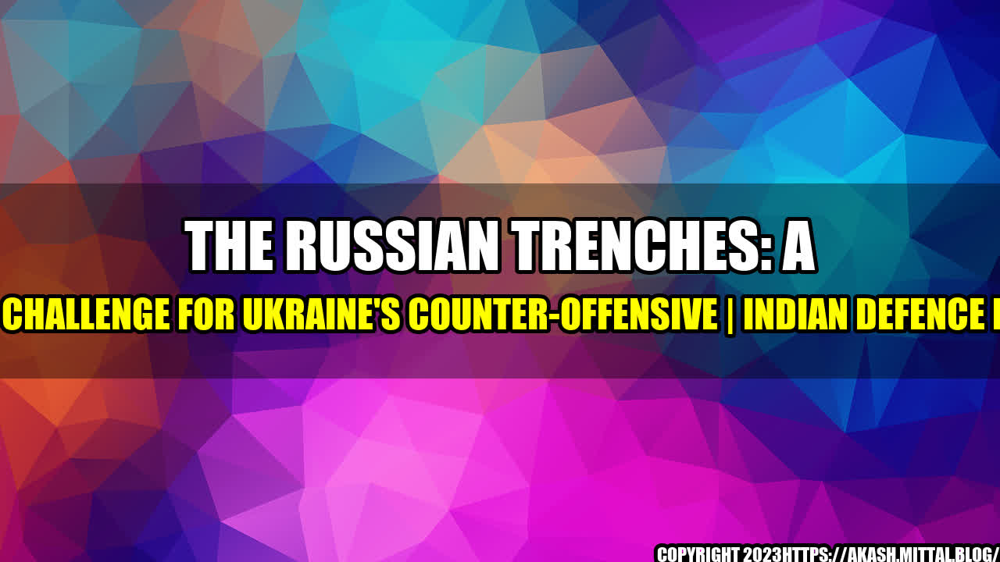

The Trenches That Pose a Major Challenge for Ukraine's Counter-Offensive
It was a cold winter night in eastern Ukraine, and a group of Ukrainian soldiers were preparing to launch a counter-offensive against Russian-backed separatists. As they made their way across the barren landscape towards the enemy's positions, they came across a network of trenches that snaked their way across the frozen earth.
"We knew that the Russians were dug in deep, but we didn't expect to come across such a vast network of trenches," one of the soldiers later recalled. "It was like they had been planning for this for months."
The Ukrainian soldiers quickly realized that these trenches posed a major challenge to their counter-offensive. Not only did they provide the enemy with excellent cover and concealment, but they also made it difficult for the Ukrainian soldiers to maneuver and attack.
The Problem with Trenches
Trenches are a common feature of warfare, dating back to ancient times. They're often used to provide protection and cover for soldiers, allowing them to avoid enemy fire and provide a strong defensive position. However, they also have some major drawbacks.
- Trenches can make it difficult for soldiers to move around and attack, particularly if they're narrow or winding.
- They can also limit the field of fire for both sides, making it harder to see and engage the enemy.
- When trenches are combined with barbed wire and other obstacles, they can create a nearly impenetrable barrier that's difficult to overcome.
These are the challenges that Ukrainian soldiers faced when they encountered the Russian trenches. But it wasn't just the trenches themselves that posed a problem – it was the way they were organized and structured that made them particularly challenging.
The Russian Trench System
The Russian-backed separatists in eastern Ukraine have constructed an extensive network of trenches and fortifications that stretch for miles across the battlefield. These trenches aren't just simple ditches or holes in the ground – they're complex structures that include:
- Multiple lines of trenches that provide overlapping fields of fire
- Underground bunkers, tunnels, and shelters that allow soldiers to move around undetected
- Barbed wire, mines, and other obstacles that make it difficult for enemy forces to advance
- Hidden snipers and machine gun nests that can target unsuspecting soldiers
What's more, the Russian trenches are carefully coordinated and staffed by experienced soldiers who have been trained in defensive tactics. They're not just a random assortment of holes in the ground – they're a coordinated system that's designed to make it as difficult as possible for the enemy to advance.
For Ukrainian soldiers, this presents a significant challenge. How do you attack an enemy that's dug in deep and fortified with dozens of well-armed soldiers?
The Importance of Planning
The Ukrainian soldiers who encountered the Russian trenches quickly realized that they needed a new approach. They couldn't simply charge into the trenches and hope for the best – they needed a carefully planned and coordinated attack.
They began by gathering intelligence on the Russian positions, using drones and other reconnaissance equipment to map out the location of the trenches and identify potential weaknesses. They also gathered information on the number and type of weapons that the enemy was using, as well as the location of any booby traps or mines.
With this information in hand, the Ukrainian soldiers developed a plan of attack. They decided to launch a simultaneous assault on several different points along the trench line, using heavy artillery and snipers to provide covering fire and suppress the enemy's defenses. They also used smoke grenades and other diversionary tactics to draw the enemy's attention away from their main attack force.
The result was a successful counter-offensive that pushed the Russian-backed separatists back and recaptured several strategic positions. The Ukrainian soldiers had overcome the challenge of the Russian trenches through careful planning and tactical skill.
Conclusion
The Russian trenches in eastern Ukraine pose a major challenge for Ukrainian soldiers who are attempting to launch a counter-offensive. These trenches are a complex system of fortifications that are designed to make it as difficult as possible for the enemy to advance, and they're staffed by experienced soldiers who have been trained in defensive tactics.
To overcome this challenge, Ukrainian soldiers need to approach the trenches with a carefully planned and coordinated attack. They need to gather intelligence on the enemy's positions and strengths, develop a plan of attack that takes advantage of any weaknesses, and use diversionary tactics and covering fire to keep the enemy off balance.
With these tactics, Ukrainian soldiers can successfully overcome the challenge of the Russian trenches and push back against the aggressors who are threatening their nation's sovereignty.
Curated by Team Akash.Mittal.Blog
Share on Twitter Share on LinkedIn